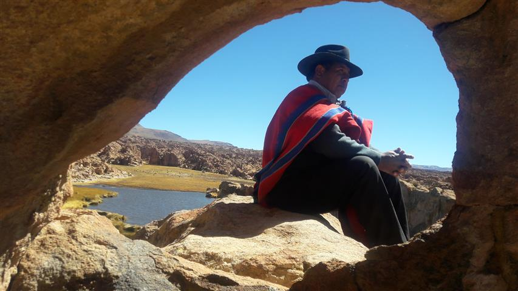
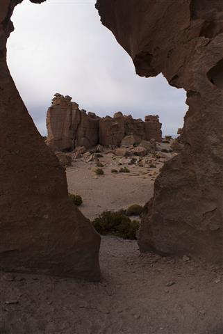
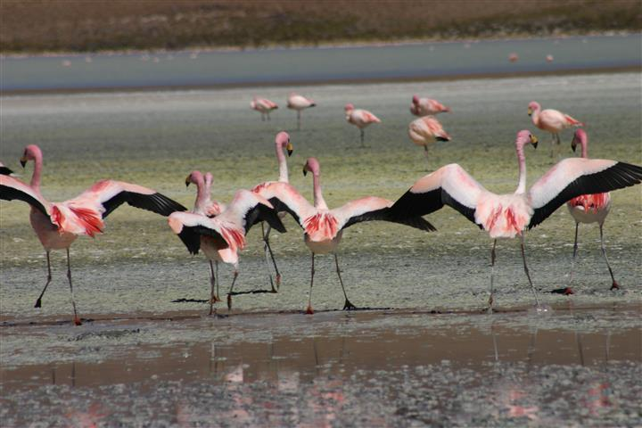
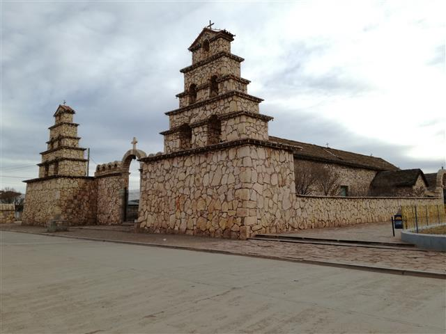
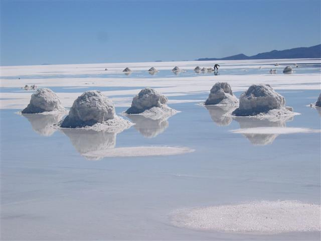
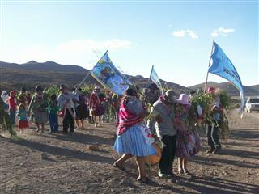

Mágia, Belleza y Aventura







La región de los Lípez, remonta su origen muchos años atrás antes de Cristo, según la historia los LLIPI, LIPI o LÍPEZ, fue una etnia que tenía una identidad cultural y dialecto propio. Su territorio comprendía el Gran Salar de Los Lipez, Río Grande de Lípez y parte de la cordillera occidental. Este grupo aparece aproximadamente 1200 a .c. hacia 1463 aproximadamente. El Inca Pachacutec llega a conquistar y dominar al pueblo de los Llipi, al que llego a organizar con ayllus, de los cuales existen indicios de restos arqueológicos de gran valor cultural e histórico como los chullpares, ruinas incaicas y pinturas rupestres, ubicadas en comunidades del intersalar como Atulcha, Aguaquiza, Llavica Villa Candelaria, Colcha “K”, Santiago de Agencha, Santiago de Chuvica, San Juan, y otras comunidades del Municipio de Colcha “K” y la misma comunidad colonial de San Cristóbal cuya iglesia es el Patrimonio Nacional. En la época colonial el Virrey Toledo delimitó el repartimiento de los Lípez, según sus intereses. Uno de los datos más importantes es la fundación de la comunidad de Colcha “K”, al pie del cerro Llipi por los señores Khasusca Ninanina, Yajtu Kajaka y María Sakasaka de los cuales el primero es considerado el gran sabio y defensor del pueblo. Hasta 1885, cuando surge la división política actual.
El Grán Salar de los Lípez
date_range
17 de mayo de 2019
Colcha K, Potosí - Bolivia
location_on
La región de los Lípez, remonta su origen muchos años atrás antes de Cristo, según la historia los LLIPI, LIPI o LÍPEZ, fue una etnia que tenía una identidad cultural y dialecto propio. Su territorio comprendía el Gran Salar de Los Lipez, Río Grande de Lípez y parte de la cordillera occidental. Este grupo aparece aproximadamente 1200 a .c. hacia 1463 aproximadamente. El Inca Pachacutec llega a conquistar y dominar al pueblo de los Llipi, al que llego a organizar con ayllus, de los cuales existen indicios de restos arqueológicos de gran valor cultural e histórico como los chullpares, ruinas incaicas y pinturas rupestres, ubicadas en comunidades del intersalar como Atulcha, Aguaquiza, Llavica Villa Candelaria, Colcha “K”, Santiago de Agencha, Santiago de Chuvica, San Juan, y otras comunidades del Municipio de Colcha “K” y la misma comunidad colonial de San Cristóbal cuya iglesia es el Patrimonio Nacional. En la época colonial el Virrey Toledo delimitó el repartimiento de los Lípez, según sus intereses. Uno de los datos más importantes es la fundación de la comunidad de Colcha “K”, al pie del cerro Llipi por los señores Khasusca Ninanina, Yajtu Kajaka y María Sakasaka de los cuales el primero es considerado el gran sabio y defensor del pueblo. Hasta 1885, cuando surge la división política actual.

El Carnaval Lipeño, remonta su origen muchos años atrás antes de Cristo, según la historia los LLIPI, LIPI o LÍPEZ, fue una etnia que tenía una identidad cultural y dialecto propio. Su territorio comprendía el Gran Salar de Los Lipez, Río Grande de Lípez y parte de la cordillera occidental. Este grupo aparece aproximadamente 1200 a .c. hacia 1463 aproximadamente. El Inca Pachacutec llega a conquistar y dominar al pueblo de los Llipi, al que llego a organizar con ayllus, de los cuales existen indicios de restos arqueológicos de gran valor cultural e histórico como los chullpares, ruinas incaicas y pinturas rupestres, ubicadas en comunidades del intersalar como Atulcha, Aguaquiza, Llavica Villa Candelaria, Colcha “K”, Santiago de Agencha, Santiago de Chuvica, San Juan, y otras comunidades del Municipio de Colcha “K” y la misma comunidad colonial de San Cristóbal cuya iglesia es el Patrimonio Nacional. En la época colonial el Virrey Toledo delimitó el repartimiento de los Lípez, según sus intereses. Uno de los datos más importantes es la fundación de la comunidad de Colcha “K”, al pie del cerro Llipi por los señores Khasusca Ninanina, Yajtu Kajaka y María Sakasaka de los cuales el primero es considerado el gran sabio y defensor del pueblo. Hasta 1885, cuando surge la división política actual.
El Carnaval Lipeño
date_range
22 de mayo de 2019
Colcha K, Potosí - Bolivia
location_on
El Carnaval Lipeño, remonta su origen muchos años atrás antes de Cristo, según la historia los LLIPI, LIPI o LÍPEZ, fue una etnia que tenía una identidad cultural y dialecto propio. Su territorio comprendía el Gran Salar de Los Lipez, Río Grande de Lípez y parte de la cordillera occidental. Este grupo aparece aproximadamente 1200 a .c. hacia 1463 aproximadamente. El Inca Pachacutec llega a conquistar y dominar al pueblo de los Llipi, al que llego a organizar con ayllus, de los cuales existen indicios de restos arqueológicos de gran valor cultural e histórico como los chullpares, ruinas incaicas y pinturas rupestres, ubicadas en comunidades del intersalar como Atulcha, Aguaquiza, Llavica Villa Candelaria, Colcha “K”, Santiago de Agencha, Santiago de Chuvica, San Juan, y otras comunidades del Municipio de Colcha “K” y la misma comunidad colonial de San Cristóbal cuya iglesia es el Patrimonio Nacional. En la época colonial el Virrey Toledo delimitó el repartimiento de los Lípez, según sus intereses. Uno de los datos más importantes es la fundación de la comunidad de Colcha “K”, al pie del cerro Llipi por los señores Khasusca Ninanina, Yajtu Kajaka y María Sakasaka de los cuales el primero es considerado el gran sabio y defensor del pueblo. Hasta 1885, cuando surge la división política actual.
Perfil del autor
Atender todos los asuntos relacionados con asesoramiento, planeación, organización, coordinación, control, desarrollo y manejo de los sistemas informáticos de la Administración Municipal, renovaciones tecnológicas, soporte técnico computacional, comunicaciones y demás información sistematizada.